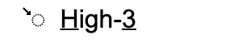
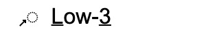
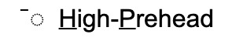
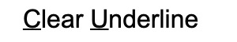

TSM記号の入力は、コマンドメニューから行います。コマンドメニューは［esc］キーを押すことで表示できます。
コマンドメニューを押下すると、ウィンドウ上部からメニューが降りてきます。この状態では2文字からなるコマンドを入力することができます。また、存在しないコマンドを入力した、あるいは再度［esc］キーを入力した場合、通常の編集画面に戻ります。
使用できるコマンドは以下の通りです（コマンドは大／小文字どちらでも構いません）。
| コマンド | 表示される記号 | 意味 |
|---|---|---|
| LF | 低下降調（音調核） | |
| HF | 高下降調（音調核） | |
| RF | 上昇下降調（音調核） | |
| LR | 低上昇調（音調核） | |
| HR | 高上昇調（音調核） | |
| FR | 下降上昇調（音調核） | |
| ML | 平坦調（音調核） | |
| H1 | 高頭／尾部の強勢(1) | |
| H2 | 高頭／尾部の強勢(2) | |
| H3 |  | 下降頭部 |
| L1 | 低頭／尾部の強勢(1) | |
| L2 | 低頭／尾部の強勢(2) | |
| L3 |  | 上昇頭部 |
| HP |  | 高前頭部 |
| SU | 下線の設定（選択されている範囲に下線が引かれます） | |
| CU |  | 下線の解除（選択されている範囲の下線が解除されます） |
| IP | 音調句の切れ目 | |
| FS | 長めの休止 |
下線は以下の手順によって設定／解除することができます。
| コマンド | 意味 |
|---|---|
| LP | 低前頭部（アンダースコア "＿"） |
| I0 | 実線の区切り線の上に赤で「0」を表示したもの |
| I1 | 実線の区切り線の上に赤で「1」を表示したもの |
| I2 | 実線の区切り線の上に赤で「2」を表示したもの |
| I3 | 実線の区切り線の上に赤で「3」を表示したもの |
| F0 | 2重線の区切り線の上に赤で「0」を表示したもの |
| F1 | 2重線の区切り線の上に赤で「1」を表示したもの |
| F2 | 2重線の区切り線の上に赤で「2」を表示したもの |
| F3 | 2重線の区切り線の上に赤で「3」を表示したもの |
| S1 | 実線の区切り線（IPと同じ） |
| S2 | 実線の区切り線（FSと同じ） |
| S3 | 実線の区切り線（3重線） |
| S4 | 実線の区切り線（変則2重線） |
| D1 | 破線の区切り線（1本線） |
| D2 | 破線の区切り線（2重線） |
| D3 | 破線の区切り線（3重線） |
| D4 | 破線の区切り線（変則2重線） |
コマンドメニューからは、TSM記号の入力以外にもいくつかのコマンドを入力することができます。それらを以下に示します。
| コマンド | 意味 | |
|---|---|---|
| AA | Add A tone | ドットの追加（詳細はこのページを参照） |
| SI | Save Image | 画像ファイルの出力（ウィンドウ上部の［Save Image File］と同機能） |
| SP | Save Project | プロジェクトファイルの出力（ウィンドウ上部の［Save Project File］と同機能） |
テキスト行のコピー&ペーストは、ブラウザー上のTuneEditorインスタンスが実行されているタブ内でしか実行できません。またその際には、TSM記号をコピーすることはできません（記号部分は空白として処理されます）。